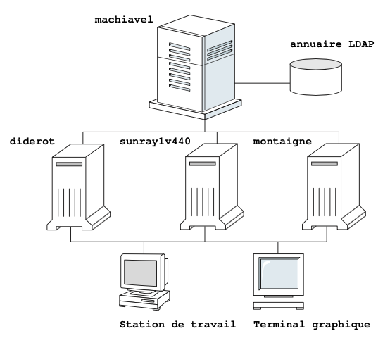

Ce chapitre décrit l’installation et la configuration de base d’un serveur LDAP et de ses clients. A la fin du chapitre, les différents clients seront en mesure de se connecter au serveur et de récupérer les informations stockées dans l’annuaire.
La figure 2.1 schématise le contexte informatique et les différentes machines de test.

Fig. 2.1 – Contexte informatique
Le serveur LDAP sera installé sur la machine machiavel où tourne la version 5.1B du système d’exploitation Tru64 UNIX. Initialement appelé OSF/1, ce système d’exploitation a été développé en 1988 par l’OSF (Open Software Foundation). En 1992 DEC (Digital Equipment Corp) achète OSF/1 et le renomme Digital Unix. Ce n’est qu’en 1999 que Compaq, ayant acheté la société Digital, rebaptise le système pour lui donner le nom de Tru64. Aujourd’hui, la société Compaq a été achetée par HP (Hewlett Packard).
Les clients LDAP sont au nombre de trois. Un système Debian est installé sur la machine montaigne. Debian est une des distributions1 du système d’exploitation GNU/Linux. Ce dernier est composé du noyau Linux développé par Linus Thorvalds et de nombreux programmes et utilitaires GNU (GNU’s Not Unix). La principale caractéristique de GNU/Linux est d’être un système d’exploitation de type UNIX libre (dont le code source est disponible) et gratuit.
La machine sunray1v440 est un serveur SunFire v440 de http://www.sun.com/ sur lequel tourne le système Solaris 8. Composé du système d’exploitation SunOS et de l’environnement graphique CDE (Common Desktop Environment), Solaris est disponible pour les architectures SPARC (architecture 64bits développée par Sun) et x86 (microprocesseurs compatibles Intel). La dernière version est Solaris 10.
Enfin, sur la machine diderot est installée la même version de Tru64 que sur machiavel.
Les caractéristiques matérielles et logicielles des différents systèmes sont reprises dans le tableau 2.1.
| machine | hardware | software |
|---|---|---|
| machiavel | Processeur Alpha à 500MHz, 512Mo de mémoire, 2 disques dur scsi de 4 Go | Système d’exploitation HP Tru64 UNIX 5.1-B |
| diderot | Processeur Alpha | HP Tru64 UNIX 5.1-B |
| sunray1v440 | SunFire v440, processeur sparc | Solaris 5.8 |
| montaigne | Processeur Intel pentium II 333 MHz, 64Mo de mémoire central, disque dur de 6 Go | Debian GNU/Linux 3.0 release 2, noyau 2.2.20 |
Tab. 2.1 – Configuration matérielle et logicielle
1 Parmi les plus connue et abouties peuvent être citées les distributions RedHat, SuSE, Mandrake